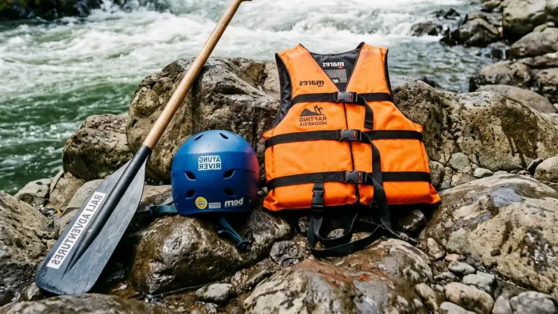

Persiapan river rafting yang tepat meliputi pemilihan pakaian yang sesuai, memastikan kondisi fisik prima, dan memahami briefing keselamatan sebelum menyusuri jeram sungai.
- Kenakan pakaian cepat kering dan sepatu tertutup yang tidak licin
- Pastikan kondisi fisik dalam keadaan sehat dan cukup istirahat sebelum trip
- Simpan barang elektronik dalam tas kedap air yang disediakan atau dibawa sendiri
- Ikuti briefing keselamatan dengan saksama sebelum keberangkatan
- Datang lebih awal agar proses pemasangan perlengkapan tidak terburu-buru
Apa Saja Persiapan Sebelum Mengikuti River Rafting?
Persiapan sebelum river rafting meliputi memastikan kondisi kesehatan baik, memakai pakaian yang sesuai, serta tiba di lokasi lebih awal untuk mengikuti briefing keselamatan.
Kondisi kesehatan menjadi pertimbangan utama karena aktivitas ini membutuhkan tenaga fisik yang cukup besar, terutama saat melewati jeram dengan tingkat kesulitan menengah ke atas. Peserta disarankan cukup istirahat pada malam sebelumnya dan menghindari konsumsi alkohol yang dapat memengaruhi konsentrasi selama trip berlangsung.
Selain kondisi fisik, tiba lebih awal di lokasi memberi waktu yang cukup untuk mengenakan perlengkapan keselamatan dengan benar dan menyimak instruksi dari pemandu tanpa terburu-buru.
Apakah Perlu Sarapan Sebelum River Rafting?
Sarapan ringan sebelum river rafting disarankan agar peserta memiliki cukup energi tanpa merasa terlalu kenyang saat beraktivitas fisik.
Makanan yang terlalu berat berisiko menyebabkan rasa tidak nyaman di perut saat perahu bergoyang mengikuti arus jeram, sehingga sebaiknya dipilih menu yang ringan namun tetap mengenyangkan seperti roti atau buah-buahan.
Apa Saja Pakaian yang Tepat untuk River Rafting?
Pakaian yang tepat untuk river rafting adalah bahan cepat kering, nyaman digunakan bergerak, dan tidak mudah menyerap air dalam jumlah besar.
Bahan seperti quick-dry atau pakaian olahraga sintetis lebih disarankan dibandingkan katun karena tidak menjadi berat saat basah. Peserta juga sebaiknya menghindari perhiasan atau aksesori yang mudah terlepas serta menggunakan sepatu tertutup dengan sol tidak licin untuk menghindari cedera saat berjalan di area berbatu menuju titik keberangkatan.
Apakah Boleh Menggunakan Sandal Jepit Saat River Rafting?
Sandal jepit tidak disarankan saat river rafting karena mudah terlepas di dalam air dan tidak memberikan perlindungan memadai bagi kaki dari batu sungai.
Sepatu tertutup berbahan ringan dengan sol karet lebih dianjurkan karena tetap melekat di kaki meski terkena arus deras dan memberikan pijakan yang lebih stabil saat peserta harus berjalan di area berbatu.
Apa Perlengkapan yang Perlu Dibawa Sendiri Selain yang Disediakan Operator?
Perlengkapan tambahan yang perlu dibawa sendiri meliputi pakaian ganti, handuk, serta tas kedap air untuk menyimpan barang pribadi seperti ponsel dan dompet.
Meskipun operator biasanya sudah menyediakan pelampung, helm, dan dayung, peserta tetap perlu mempersiapkan kebutuhan pribadi pasca-trip seperti pakaian ganti dan handuk agar tetap nyaman setelah selesai beraktivitas di air. Tas kedap air juga penting untuk melindungi barang elektronik dari risiko kerusakan akibat terkena percikan atau terendam air sungai.
Bagaimana Cara Menyimpan Ponsel Selama River Rafting?
Ponsel sebaiknya disimpan dalam tas kedap air yang diikatkan erat pada perahu atau dititipkan kepada kru darat sebelum trip dimulai untuk menghindari risiko kerusakan atau kehilangan.
Sebagian operator menyediakan layanan penitipan barang di titik keberangkatan sehingga peserta tidak perlu membawa barang berharga selama berada di atas perahu.
Bagaimana Kondisi Fisik Ideal Sebelum Mengikuti River Rafting?
Kondisi fisik ideal sebelum river rafting adalah tubuh dalam keadaan sehat, cukup istirahat, dan tidak memiliki keluhan kesehatan yang dapat memburuk akibat aktivitas fisik intens.
Peserta dengan riwayat gangguan jantung, tekanan darah tinggi, atau cedera fisik tertentu disarankan berkonsultasi dengan dokter sebelum mengikuti trip, mengingat river rafting membutuhkan tenaga dan reaksi cepat saat melewati jeram. Operator umumnya juga menetapkan batas usia dan kondisi kesehatan minimum sebagai bagian dari prosedur keselamatan standar.
FAQ
Apa saja perlengkapan yang wajib dibawa sendiri saat river rafting?
Perlengkapan yang perlu dibawa sendiri meliputi pakaian ganti, handuk, dan tas kedap air untuk barang pribadi seperti ponsel.
Apakah boleh memakai sandal saat river rafting?
Sandal jepit tidak disarankan karena mudah terlepas di air, sepatu tertutup dengan sol tidak licin lebih dianjurkan.
Apakah orang dengan riwayat penyakit jantung boleh mengikuti river rafting?
Peserta dengan riwayat gangguan jantung sebaiknya berkonsultasi dengan dokter terlebih dahulu sebelum mengikuti river rafting karena aktivitas ini membutuhkan tenaga fisik intens.
Arya
penulis artikel yang sudah berpengalaman di dalam dunia wisata outbound Batu Malang.